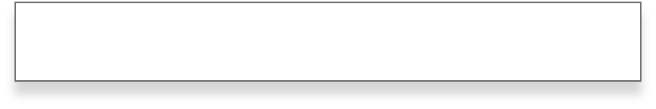

Montaža i popravak
© 2021. A/C Klima Servis d.o.o. - Europski je tip servis centara/The European Concept of Service Centers. Sva
prava pridržana/All Rights Reserved.
Probod zida, postavljanje unutarnje jedinice, montaža pocinčanih nosača, postavljanje vanjske jedinice,
postavljanje frigo i elektroinstalacija.
Puštanje u rad i upute o korištenju.
Puštanje u rad i upute o korištenju.
Izlazak na teren i dijagnosticiranje kvara.
Provjera količine radne tvari u sistemu. Provjera instalacija i popravak elektronike, ako je popravak moguć.
Procjena popravka uređaja. Zamjena startera, ventilatora, ventila, crijeva, kondenzatora i izolacije.
Provjera količine radne tvari u sistemu. Provjera instalacija i popravak elektronike, ako je popravak moguć.
Procjena popravka uređaja. Zamjena startera, ventilatora, ventila, crijeva, kondenzatora i izolacije.